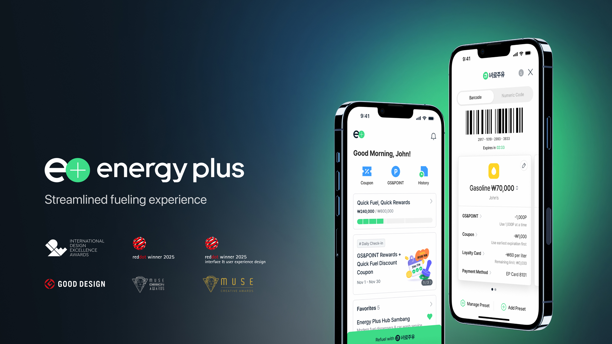
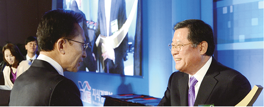

- ENERGY FOR SUSTAINABLE LIFE
- GS칼텍스는 대한민국 최초 민간 정유사로 출발해 앞선 기술과 차별화된 품질로 전 세계 50개국에 정유, 석유화학, 윤활유 등의 제품을 수출하고 있습니다. 또한 미래 환경 변화에 대응하기 위해 디지털 및 AI 기술을 적극적으로 적용하고 저탄소 신사업을 강화하며 지속가능한 미래를 위한 여정을 이어가고 있습니다.
GS타워
여수 제2공장 정경
미래형 주유소
VR AR 안전교육

공장 전경사진

내곡 스마트 MFC
직접액체냉각유체

바이오선박유 공급
GS칼텍스 예울마루
에너지플러스허브 달맞이

에너지플러스 서울로

에너지플러스

VR 안전점검 시뮬레이터
드론 설비점검
AI활용 에너지 절감 설비



